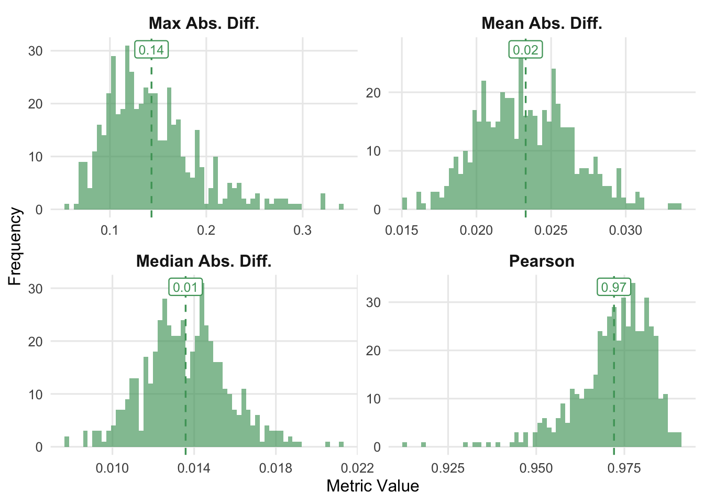
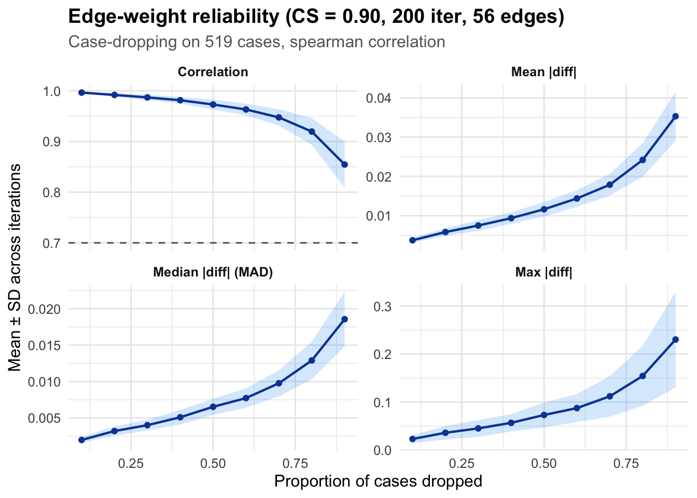
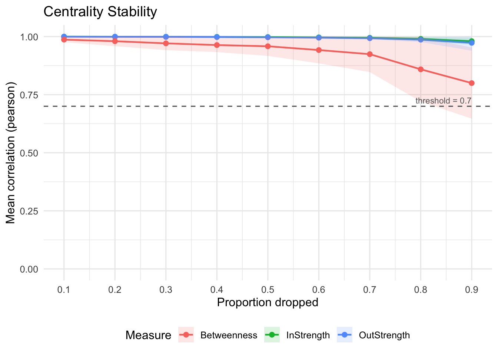
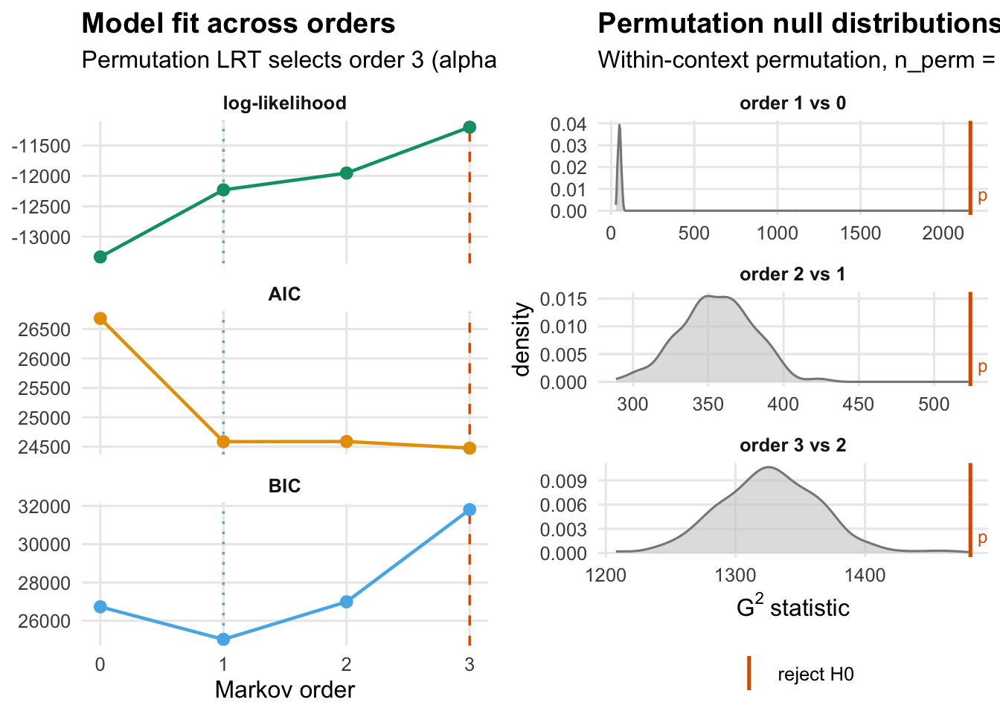
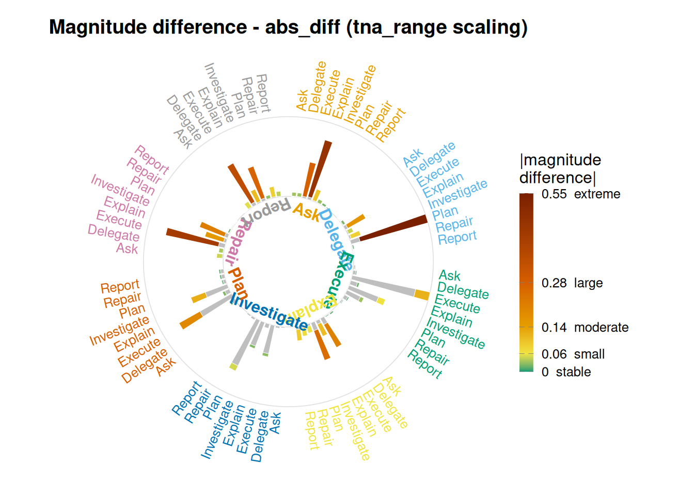

Tutorial: Model assessment for transition networks
Split-half reliability, case-dropping stability, and Markov-order adequacy
Source:vignettes/articles/tutorial_model_assessment.qmd
Tutorial: Model assessment for transition networks
Split-half reliability, case-dropping stability, and Markov-order adequacy
The questions to ask
A fitted transition network summarises a lot of sequence data into a small matrix of edge weights. Before interpreting any result drawn from that matrix — a centrality ranking, a pathway, a difference between two groups — you need to know how much of the matrix is signal and how much is an artefact of this particular sample. Five complementary analyses answer that question from different angles: four ask whether the matrix is stable when the data changes, and one asks whether the probability view overstates edges that originate in rare states.
- Split-half reliability. If I randomly split my cases into two halves and estimate the network on each half, do the two networks agree? This is the classical internal-consistency check (Epskamp, Borsboom & Fried, 2018).
- Edge-weight case-dropping stability. If I drop a fraction of my cases and re-estimate the network, do the same edges keep roughly the same weights? This asks whether the map of connections is stable.
- Centrality case-dropping stability. Same case-dropping procedure, but now we ask whether the ranking of nodes by centrality is preserved. The formal summary is the CS-coefficient (Epskamp, Borsboom & Fried, 2018).
- Markov-order adequacy. The transition network assumes that the next state depends only on the current state. Does the data actually respect that assumption, or is history beyond one step carrying information?
- Count versus probability. Row-normalisation turns transition counts into conditional probabilities. An edge leaving a rare state can be negligible in counts yet dominate its row in probability. Which edges does the probability view promote this way, and by how much?
Each function below answers one question. Run them together when you need the full picture; run just the relevant one when you only need one. None of them replaces the others.
The data
ai_long contains coded actions from AI-side turns in a human–AI vibe-coding study. Each row is one action, tagged with the session it belongs to and a timestamp.
[1] 8551 9
head(ai_long, 3) message_id project session_id timestamp session_date code cluster
1 3441 Project_7 0086cabebd15 1772661600 2026-03-05 Delegate Action
2 3441 Project_7 0086cabebd15 1772661600 2026-03-05 Plan Repair
3 3443 Project_7 0086cabebd15 1772661600 2026-03-05 Execute Action
code_order order_in_session
1 1 5
2 2 6
3 1 8
table(ai_long$code)
Ask Delegate Execute Explain Investigate Plan
99 295 3258 524 2317 1620
Repair Report
257 181 Eight codes, 8,551 actions, spread over several hundred sessions. The most common actions are Execute and Investigate; Ask and Report are rare. That imbalance is one reason we want stability checks — rare codes produce unreliable edges because there are few observations of them.
Building the baseline network
The stability assessments all work on the same network, so we estimate it once. We use the row-stochastic transition network (method = "relative"): each edge is the probability of going from one code to another.
net <- build_network(
ai_long,
method = "relative",
action = "code",
actor = "session_id",
time = "timestamp"
)
netTransition Network (relative probabilities) [directed]
Weights: [0.004, 0.624] | mean: 0.125
Weight matrix:
Ask Delegate Execute Explain Investigate Plan Repair Report
Ask 0.033 0.033 0.286 0.484 0.099 0.033 0.022 0.011
Delegate 0.007 0.025 0.183 0.050 0.093 0.624 0.014 0.004
Execute 0.010 0.022 0.509 0.055 0.247 0.116 0.031 0.010
Explain 0.018 0.012 0.259 0.133 0.311 0.070 0.084 0.112
Investigate 0.009 0.016 0.251 0.036 0.219 0.440 0.018 0.012
Plan 0.010 0.048 0.471 0.059 0.303 0.033 0.038 0.038
Repair 0.052 0.040 0.472 0.172 0.236 0.016 0.008 0.004
Report 0.006 0.057 0.373 0.114 0.285 0.032 0.089 0.044
Initial probabilities:
Investigate 0.642 ████████████████████████████████████████
Delegate 0.166 ██████████
Execute 0.131 ████████
Plan 0.035 ██
Explain 0.012 █
Ask 0.008
Repair 0.006
Report 0.002 The network has eight nodes (one per code) and a full 8×8 weight matrix of transition probabilities. The question now is: how much of that matrix can we trust?
Split-half reliability
Question. If I split my sessions randomly in half and fit the network on each half, how close are the two halves?
rel <- network_reliability(net, iter = 500L, seed = 1)
relSplit-Half Reliability (500 iterations, split = 50%)
Mean Abs. Diff. mean = 0.0233 sd = 0.0032
Median Abs. Diff. mean = 0.0136 sd = 0.0020
Pearson mean = 0.9721 sd = 0.0107
Max Abs. Diff. mean = 0.1431 sd = 0.0479network_reliability() runs 500 random 50/50 splits. For each split it fits the network on each half and compares the two 8×8 weight matrices along four metrics:
-
mean_dev/median_dev/max_dev— absolute differences between corresponding cells of the two matrices. Smaller is better. Because our weights are probabilities in[0, 1], the mean absolute difference is interpretable on the same scale: amean_devof 0.02 means the two halves disagree by 2 percentage points on the typical edge. -
cor— Pearson correlation between the two weight vectors. Closer to 1 is better. This is the single most-cited psychometric summary of split-half reliability.
The numbers above show the average over iterations. The distribution matters too — if cor averages 0.95 but occasionally dips to 0.4, that is a very different story from a tight distribution centred on 0.95.
plot(rel)
Each panel is the histogram of one metric across the 500 iterations, with a dashed line at the mean. The correlation panel is the one to read first: values concentrated near 1.0 say the split-half networks are near-identical, values spread over a wide range say the network shape depends on which sessions happen to be in which half.
Edge-weight stability under case-dropping
Question. If I randomly drop a fraction of my sessions (10%, 20%, …, 75%) and re-estimate the network, how correlated is the resulting edge vector with the edge vector from the full data?
edge_stab <- casedrop_reliability(net, iter = 200L, seed = 1)
edge_stabEdge-weight Case-dropping Stability
Cases (rows of $data) : 519
Edges assessed : 56 (diagonal excluded)
Iterations / prop : 200
Correlation method : spearman
CS-coefficient (r) : 0.90 (threshold=0.70, certainty=0.95)
Model-level reliability across iterations (mean +/- sd per drop):
drop_prop p=0.1 p=0.2 p=0.3 p=0.4 p=0.5 p=0.6 p=0.7 p=0.8 p=0.9
mean|diff| 0.004+- 0.001 0.006+- 0.001 0.008+- 0.001 0.009+- 0.001 0.012+- 0.002 0.014+- 0.002 0.018+- 0.003 0.024+- 0.004 0.035+- 0.006
MAD 0.002+- 0.000 0.003+- 0.001 0.004+- 0.001 0.005+- 0.001 0.007+- 0.001 0.008+- 0.001 0.010+- 0.002 0.013+- 0.003 0.019+- 0.004
cor 0.997+- 0.002 0.992+- 0.003 0.987+- 0.006 0.981+- 0.007 0.973+- 0.010 0.963+- 0.012 0.948+- 0.016 0.920+- 0.026 0.855+- 0.046
max|diff| 0.023+- 0.008 0.036+- 0.014 0.045+- 0.018 0.057+- 0.018 0.073+- 0.026 0.088+- 0.029 0.112+- 0.042 0.154+- 0.062 0.230+- 0.099The printed summary reports the CS-coefficient — the largest drop proportion at which the correlation with the original network stays above 0.7 in at least 95% of iterations. A CS-coefficient of 0.75 means we can drop up to three-quarters of sessions and still recover essentially the same edge map; a CS-coefficient of 0.1 means dropping even 10% of sessions changes the edge map materially. Epskamp, Borsboom and Fried (2018) recommend interpreting CS > 0.5 as “very stable”, 0.25–0.5 as “moderate”, and below 0.25 as “do not interpret”.
The $summary data frame gives the mean correlation at each drop proportion, which is useful for seeing where the stability breaks down rather than just the single summary.
edge_stab$summary metric drop_prop mean sd median mad
1 mean_abs_dev 0.1 0.003745396 0.0006610889 0.003722848 0.0007023935
2 mean_abs_dev 0.2 0.005837442 0.0009764617 0.005717209 0.0008899873
3 mean_abs_dev 0.3 0.007501541 0.0013866835 0.007288957 0.0011968245
4 mean_abs_dev 0.4 0.009373706 0.0014756410 0.009272323 0.0014506353
5 mean_abs_dev 0.5 0.011638929 0.0018594173 0.011607276 0.0018970206
6 mean_abs_dev 0.6 0.014392345 0.0021273819 0.014362050 0.0021959736
7 mean_abs_dev 0.7 0.017888843 0.0027631074 0.017662760 0.0023932913
8 mean_abs_dev 0.8 0.024203225 0.0042686450 0.023896966 0.0045259882
9 mean_abs_dev 0.9 0.035323256 0.0062466915 0.034959053 0.0060704021
10 median_abs_dev 0.1 0.001970910 0.0004040397 0.001943886 0.0003863574
11 median_abs_dev 0.2 0.003200589 0.0006209685 0.003178931 0.0005884811
12 median_abs_dev 0.3 0.004005006 0.0007536424 0.003889321 0.0007526981
13 median_abs_dev 0.4 0.005092435 0.0009974518 0.004971274 0.0010134297
14 median_abs_dev 0.5 0.006528835 0.0011103443 0.006456650 0.0011124039
15 median_abs_dev 0.6 0.007727481 0.0013359315 0.007458601 0.0012806467
16 median_abs_dev 0.7 0.009764636 0.0018032095 0.009834557 0.0018238086
17 median_abs_dev 0.8 0.012901266 0.0025697061 0.012629338 0.0024811624
18 median_abs_dev 0.9 0.018568118 0.0037663270 0.017944809 0.0034527373
19 correlation 0.1 0.996502634 0.0017368400 0.996923997 0.0013047342
20 correlation 0.2 0.991933207 0.0032188308 0.992395243 0.0023182648
21 correlation 0.3 0.987015873 0.0055843498 0.988917656 0.0043329959
22 correlation 0.4 0.981468213 0.0065265229 0.982600683 0.0062226591
23 correlation 0.5 0.972989486 0.0097224737 0.975199993 0.0096498541
24 correlation 0.6 0.963231697 0.0115063110 0.963883143 0.0111741910
25 correlation 0.7 0.947559776 0.0163015032 0.950688584 0.0153889561
26 correlation 0.8 0.919636275 0.0264746150 0.926076100 0.0210671543
27 correlation 0.9 0.854575788 0.0455482804 0.861398128 0.0479189081
28 max_abs_dev 0.1 0.023175348 0.0081869871 0.021978022 0.0080982353
29 max_abs_dev 0.2 0.036149026 0.0142795323 0.033098727 0.0116904624
30 max_abs_dev 0.3 0.045226645 0.0175772306 0.041803232 0.0132695351
31 max_abs_dev 0.4 0.056840320 0.0180386709 0.054029509 0.0167781662
32 max_abs_dev 0.5 0.073191848 0.0259732594 0.067142680 0.0215532470
33 max_abs_dev 0.6 0.087522302 0.0290720762 0.083386857 0.0283193538
34 max_abs_dev 0.7 0.112090709 0.0421676838 0.103467254 0.0370447590
35 max_abs_dev 0.8 0.154451250 0.0623674393 0.140789654 0.0553785259
36 max_abs_dev 0.9 0.230368405 0.0994627654 0.209338130 0.0814956986
q025 q975
1 0.002615373 0.005004996
2 0.004040667 0.007711156
3 0.005304633 0.010280509
4 0.006830791 0.012498049
5 0.008496306 0.015580892
6 0.010233386 0.018300112
7 0.012420562 0.023246482
8 0.017008968 0.032597412
9 0.024422601 0.048783559
10 0.001256168 0.002817319
11 0.002146920 0.004394063
12 0.002943635 0.005824648
13 0.003489657 0.007045524
14 0.004756724 0.008914517
15 0.005630005 0.010723094
16 0.006675266 0.013797616
17 0.008277390 0.019361258
18 0.012215760 0.027032649
19 0.991350086 0.998769609
20 0.983424316 0.996650971
21 0.973869564 0.994206856
22 0.966733628 0.990450642
23 0.952220818 0.986706157
24 0.937444238 0.981945377
25 0.906414935 0.972034928
26 0.853826143 0.955447970
27 0.750341369 0.923668615
28 0.012304208 0.042147436
29 0.018040176 0.070432596
30 0.021967619 0.087816153
31 0.028999532 0.094734432
32 0.040071315 0.132459366
33 0.043835829 0.152847153
34 0.056666082 0.208929599
35 0.068507699 0.302067932
36 0.117946369 0.483516484
plot(edge_stab)
The curve should stay near 1 for small drops and decline as we drop more. A curve that drops sharply at low proportions means a few influential sessions are carrying the edge estimates — a warning that the network is not a population-level summary but a description of those particular sessions.
Centrality stability under case-dropping
Question. The edges are one thing; the rankings of nodes by centrality are what most applied readers focus on (which code is the most “central”, which is the least, etc.). If I case-drop, do those rankings survive?
cent_stab <- centrality_stability(
net,
measures = c("InStrength", "OutStrength", "Betweenness"),
iter = 200L,
seed = 1
)
cent_stabCentrality Stability (200 iterations, threshold = 0.7)
Drop proportions: 0.1, 0.2, 0.3, 0.4, 0.5, 0.6, 0.7, 0.8, 0.9
CS-coefficients:
InStrength 0.90
OutStrength 0.90
Betweenness 0.70centrality_stability() produces one CS-coefficient per centrality measure. The machinery is the same as casedrop_reliability() — drop cases, re-estimate, correlate — but the correlation is computed between the centrality vectors, not the edge vectors. A node can have stable edges and unstable centrality (or vice versa) because centrality sums many edges and rank ties can flip even when individual edges barely move.
The interpretation thresholds are the same: above 0.5 is stable enough to report, 0.25–0.5 means report with caution, below 0.25 means do not rank.
plot(cent_stab)
Each curve is one centrality measure. When two measures diverge — for example, InStrength stays stable but Betweenness collapses — that is a statement about which kind of finding the data can support. Strength centralities are sums over all incoming/outgoing edges and average out sampling noise; betweenness depends on shortest paths and can rewire with small changes, so it is often the first to become unstable.
Markov-order adequacy
Question. A transition network treats the next action as depending only on the current action. Is that assumption actually warranted for this data, or does the previous-previous action (or further back) carry information the network is throwing away?
markov_order_test() tests this directly. For each order from 1 to max_order, it asks whether moving from a -th-order Markov model to a -th-order one explains significantly more variance in the sequence. The test statistic is the classical likelihood-ratio computed on -grams, with a reference distribution built by exact within-context permutation — no parametric bootstrap, no plug-in MLE. Details are in ?markov_order_test.
markov_order_test() reads the sequences straight out of the network — pass the net object and it pulls one sequence per session from the model.
mo <- markov_order_test(net, max_order = 3L, n_perm = 200L, seed = 1)
moMarkov Order Test [within-w permutation, n_perm = 200, alpha = 0.050]
503 sequences / 8535 observations / 8 states
Selected order BIC: 1 AIC: 3 permutation-LRT: 3
order loglik AIC BIC df g2 p_permutation p_asymptotic
0 -13333.84 26681.68 26731.04 NA NA NA NA
1 -12229.21 24584.43 25028.70 49 2161.35 0.004975124 0.000000e+00
2 -11952.72 24587.43 26992.14 392 524.10 0.004975124 8.704760e-06
3 -11196.97 24473.94 31807.95 1455 1481.24 0.004975124 3.099724e-01
significant
NA
TRUE
TRUE
TRUEThe test_table reports, for each order , the log-likelihood, degrees of freedom, observed statistic, permutation p-value, and whether the increment from to is significant at .
mo$test_table order loglik AIC BIC df g2 p_permutation p_asymptotic
1 0 -13333.84 26681.68 26731.04 NA NA NA NA
2 1 -12229.21 24584.43 25028.70 49 2161.3550 0.004975124 0.000000e+00
3 2 -11952.72 24587.43 26992.14 392 524.0985 0.004975124 8.704760e-06
4 3 -11196.97 24473.94 31807.95 1455 1481.2430 0.004975124 3.099724e-01
significant
1 NA
2 TRUE
3 TRUE
4 TRUETwo orders to pay attention to: the permutation-selected order (smallest whose increment is not significant — the highest order the data provides evidence for) and the BIC-selected order (smallest BIC, a penalised-likelihood criterion). They often agree. When they disagree — BIC says “keep it simple, order 1”, permutation says “order 2 is really different from order 1” — the correct reading is that the effect is real but small; whether to use the larger model depends on what you plan to do with it.
plot(mo)
The left panel shows log-likelihood, AIC, and BIC by order, with both selected orders marked. The right panel shows the permutation null for each order with the observed overlaid — a red line far out in the right tail of the null is the visual signature of a significant order increment.
Why this matters for the transition network. If mo$optimal_order is 1, the order-1 transition network captures the sequence dynamics and any pathway longer than one step is a composition of independent steps. If it is 2 or higher, the network is a first-order approximation to a process with memory, and longer pathways are overstated or understated depending on which specific higher-order patterns the data contains. That is the situation where a higher-order model (build_hon(), build_mogen()) is indicated, not a signal to abandon the first-order network but to supplement it.
Count versus probability: magnitude difference
Question. The network above is the row-normalised (probability) view. The same transitions also have a raw-count (frequency) view, and the two rank edges differently: an edge leaving a rare state can be a rounding error in counts yet dominate its row in probability. Which edges does normalisation promote this way, and how far?
magnitude_difference() builds both views from the data and reports, per edge, the gap between them on a common scale. It takes the event log directly, not the fitted network, because it needs both the counts and the probabilities.
md <- magnitude_difference(ai_long, action = "code",
actor = "session_id", time = "timestamp")
mdmagnitude_difference object
metric: abs_diff scale: tna_range
states (8): Ask, Delegate, Execute, Explain, Investigate, Plan, Repair, Report
edges: 64
magnitude-difference summary (abs_diff):
Min. 1st Qu. Median Mean 3rd Qu. Max.
0.00000 0.00917 0.02858 0.07946 0.09482 0.55082 The default metric is abs_diff (absolute difference) with both matrices placed on the TNA probability scale (scale = "tna_range"), so the numbers are in probability units. The summary shows that the median edge moves only about 0.03 between the two views — most of the network reads the same either way — but the maximum is 0.55. A handful of edges are interpreted completely differently depending on which summary you read.
The plot makes the promoted edges visible. Each sector is one source state; the grey base is the value shared by both views and the coloured tip is the magnitude difference, so a long coloured tip marks an edge the probability view inflates.
plot(md)
The longest tips sit on the rare source states — transitions such as Delegate -> Plan, Ask -> Explain, and Repair -> Execute are near-zero in raw counts (a few events each) but carry probabilities of 0.4–0.6 because their source state is visited so seldom that a single successor dominates its row. The reading is concrete: a high transition probability out of a rare state is not the same evidence as a high transition probability out of a common one. When you report a strong edge, check whether its source is frequent enough for that probability to mean what it appears to mean — magnitude_difference() tells you exactly which edges need that caveat.
Reading the assessments together
No single number answers “is my network good”. Each assessment answers a different kind of “good”:
| Assessment | Answers | Threshold |
|---|---|---|
network_reliability |
Does the network survive a 50/50 split? |
cor > 0.8 typical, > 0.9 strong |
casedrop_reliability |
Which edges persist when I drop cases? | CS > 0.5 stable, > 0.25 moderate |
centrality_stability |
Can I trust the rankings I’ll report? | CS > 0.5 stable, > 0.25 moderate |
markov_order_test |
Is the first-order assumption adequate? | Smallest non-rejected order |
magnitude_difference |
Which edges does the probability view inflate over counts? | Large signed flags a rare-source edge |
The typical workflow is:
- Run
markov_order_test()first. If the optimal order is 1, you can proceed with a first-order transition network and the three stability checks apply directly. If it is higher, decide whether to continue with a first-order approximation (and report the order test as a caveat) or to move to a higher-order model. - Run
casedrop_reliability()andcentrality_stability(). If both CS-coefficients are above 0.5, report the network and any centrality ranking it supports. If one is below 0.25, re-plan: more data, a different estimator, or a simpler claim. - Run
network_reliability()as a sanity check that the full network does not depend on the particular partition you happen to have. A highcorhere with unstable case-dropping is possible — it means the full network is internally consistent at this sample size, but generalising it beyond these cases is not warranted.
When reporting a transition-network analysis in a paper, all four numbers (optimal Markov order, CS-coefficient for edges, CS-coefficient for the reported centrality measure, split-half correlation) belong in a short methods paragraph. Reviewers and replicators will ask for them in review if they are absent.
References
Epskamp, S., Borsboom, D., & Fried, E. I. (2018). Estimating psychological networks and their accuracy: A tutorial paper. Behavior Research Methods, 50(1), 195–212.
Saqr, M. (2026). Human–AI vibe coding interaction study. https://saqr.me/blog/2026/human-ai-interaction-cograph/